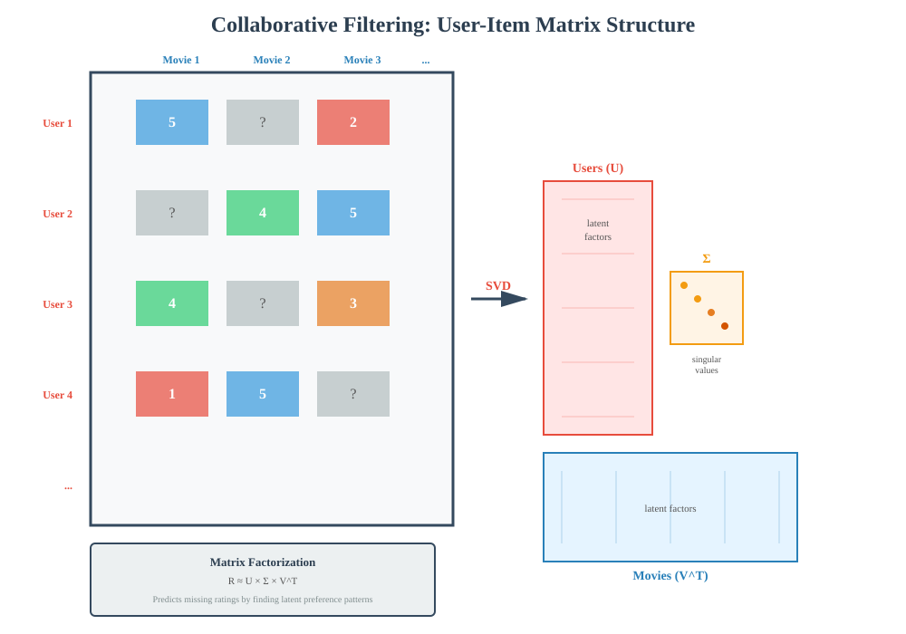
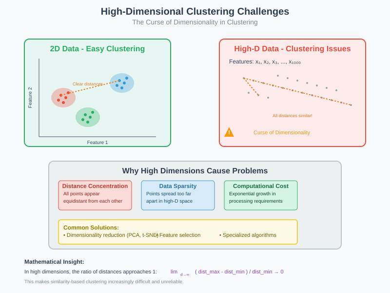
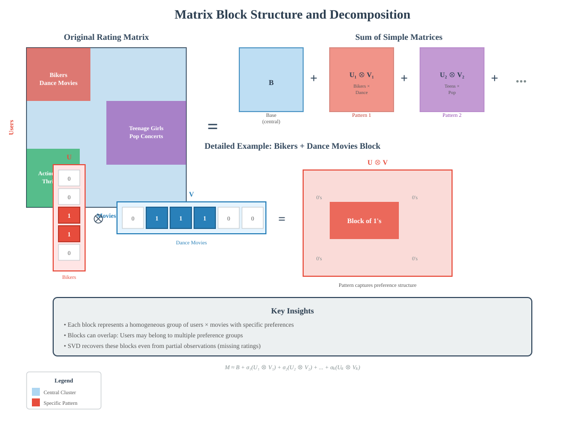
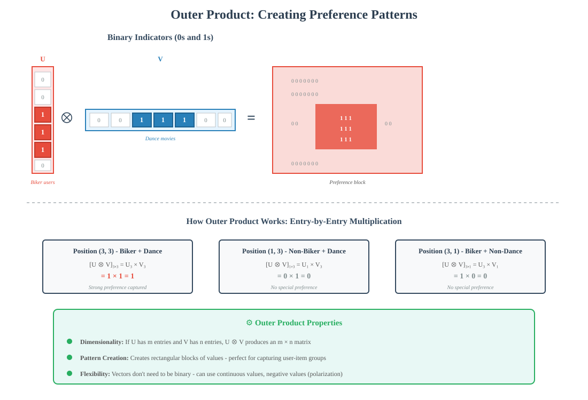
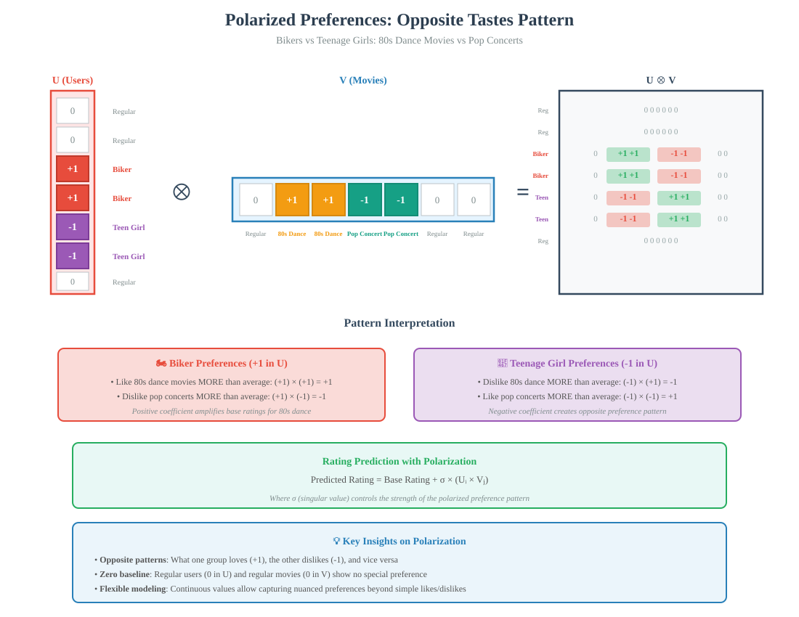
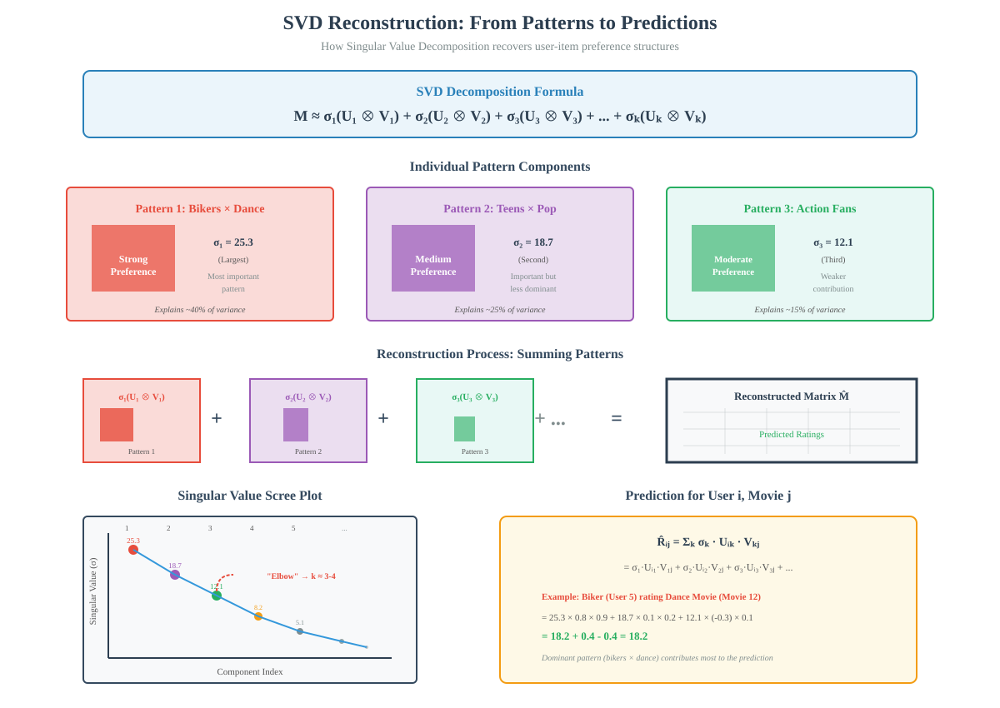

User-Item Collaborative Filtering with Singular Value Decomposition (SVD)
📋 Quick Navigation
- Introduction
- The High-Dimensional Challenge
- Matrix Block Structure
- Outer Product Decomposition
- Polarized Preferences
- Singular Value Decomposition (SVD)
- Practical Implementation
- Applications & Examples
- References & Further Reading
Introduction
User-Item Collaborative Filtering combines both user-based and item-based recommendation approaches into a unified framework. Rather than treating users and items separately, this method recognizes that specific user-item combinations contain unique information about preferences.
Core Principle:
The reason Frank likes "Dirty Dancing" comes from both the fact that he's Frank AND the fact that the movie is "Dirty Dancing" - the user-item combination is what truly matters.

Key Advantages:
- Simultaneous clustering: Groups users and movies together
- Pattern discovery: Identifies complex preference structures
- Dimensionality reduction: Handles high-dimensional rating spaces efficiently
- Noise robustness: SVD is resilient to incomplete and noisy data
The High-Dimensional Challenge
Understanding the Problem
In recommendation systems, each user can be represented as a vector in a very high-dimensional space - with as many dimensions as there are items (e.g., 17,000 movies in Netflix).
The Central User Concept:
Consider a "central user" who rates all movies as 3 (the average rating). Other users are variations around this central user:
- Probability ½: Rate the movie 3 (same as central user)
- Probability ¼: Rate the movie 4 (one point higher)
- Probability ¼: Rate the movie 2 (one point lower)
Mathematical Representation:
User row = C + D
Where:
- C: Central user vector (all 3's)
- D: Difference vector (contains 0, +1, -1)
The Similarity Problem
When computing inner products between users in high dimensions:
Inner product between central users ≈ 3×3 + 3×3 + ... + 3×3 (17,000 times) = 153,000
Issue: Variations between users (±200) are small compared to the base similarity (153,000), making it difficult to distinguish different user clusters.

The Overlap Problem:
- Central cluster users show high similarity to each other
- Dance preference cluster overlaps significantly with central cluster
- Many dance cluster users appear more similar to central users than actual central cluster members
Solution:
Focus on specific subsets of features (e.g., only dance movies) where clusters separate clearly. This is where user-item collaborative filtering and SVD become essential.
Matrix Block Structure
Visualizing the Rating Matrix
When we organize rows (users) and columns (movies) such that similar rows are adjacent and similar columns are adjacent, the rating matrix reveals a block structure.

Block Characteristics:
- Homogeneous groups: Each block represents a group of users and movies with similar patterns
- Multiple blocks: Real-world matrices contain several overlapping blocks
- Pattern capture: Each block captures a specific preference pattern different from the rest
Mathematical Decomposition
Key Observation:
A matrix with block structure can be decomposed as the sum of simple matrices, one for each block:
M = B + U₁ ⊗ V₁ + U₂ ⊗ V₂ + ... + Uₖ ⊗ Vₖ
Where:
- M: Complete rating matrix
- B: Base matrix (central cluster ratings)
- Uᵢ: User pattern vector (column)
- Vᵢ: Movie pattern vector (row)
- ⊗: Outer product operator
Simple Block Example
Scenario: Bikers who rate dance movies higher than average.
Base Matrix (B):
- Blue region: Central cluster ratings
- Ratings: 3 (prob ½), 4 (prob ¼), 2 (prob ¼)
Red Block (Bikers + Dance movies):
- Ratings: 4 (prob ½), 5 (prob ¼), 3 (prob ¼)
- Average: One point higher than central cluster
Decomposition:
Matrix = B + U ⊗ V
Where:
- U: Column vector with 1's for bikers, 0's elsewhere
- V: Row vector with 1's for dance movies, 0's elsewhere
Outer Product Decomposition
Understanding Outer Products
Unlike inner products (which produce a single number), outer products produce a matrix.

Definition:
Given column vector U (height m) and row vector V (width n):
[U ⊗ V]ᵢⱼ = Uᵢ × Vⱼ
Properties:
- Output: m × n matrix
- Entry calculation: Element at position (i,j) is the product of Uᵢ and Vⱼ
- Pattern generation: Creates rectangular blocks of values
Binary Indicator Example
User Vector U:
U = [0, 0, 1, 1, 1, 0, 0, ...]ᵀ
Where:
- 1 indicates user is in the "bikers" group
- 0 indicates user is not in the group
Movie Vector V:
V = [0, 0, 0, 1, 1, 1, 0, 0, ...]
Where:
- 1 indicates movie is about dancing
- 0 indicates movie is not about dancing
Outer Product Result:
U ⊗ V = Matrix with 1's only where both user is biker AND movie is dance
This creates a rectangular block of 1's in the top-left corner (biker rows × dance columns).
Adding Multiple Blocks
To represent multiple preference patterns:
M = B + Σᵢ σᵢ(Uᵢ ⊗ Vᵢ)
Where:
- σᵢ: Scaling factor (singular value) for pattern i
- Each term captures a different user-item preference pattern
- Patterns can overlap and combine
Flexibility:
Vectors U and V don't need to be binary - they can represent:
- Continuous preferences: Varying degrees of interest
- Polarized tastes: Positive values for one group, negative for another
- Complex patterns: Multiple overlapping characteristics
Polarized Preferences
Beyond Binary Patterns
Real recommendation systems exhibit polarized preferences where different user groups have opposite tastes for certain items.

Example: Bikers vs Teenage Girls
User Groups (assumed disjoint):
- Group 1: Bikers
- Group 2: Teenage girls
Movie Categories:
- Category 1: 1980s dancing movies
- Category 2: Pop concerts
User Vector U:
U = [+1 for bikers, -1 for teenage girls, 0 for others]ᵀ
Movie Vector V:
V = [+1 for 80s dance movies, -1 for pop concerts, 0 for others]
Outer Product Analysis
[U ⊗ V]ᵢⱼ = Uᵢ × Vⱼ
Result Matrix Patterns:
- +1 entries: Bikers × 80s dance movies (positive preference)
- +1 entries: Teenage girls × Pop concerts (positive preference)
- -1 entries: Bikers × Pop concerts (negative preference)
- -1 entries: Teenage girls × 80s dance movies (negative preference)
- 0 entries: All other combinations
Interpretation:
- Bikers: Like 80s dance movies MORE than average, dislike pop concerts MORE than average
- Teenage girls: Like pop concerts MORE than average, dislike 80s dance movies MORE than average
- Opposite patterns: What one group likes, the other dislikes
Practical Implications
Rating Prediction:
For a biker and an 80s dance movie:
Predicted Rating = Base Rating + (+1) × σ = Base + σ
For a biker and a pop concert:
Predicted Rating = Base Rating + (-1) × σ = Base - σ
Pattern Strength:
The singular value σ determines how much the polarized preference affects the final rating.
Singular Value Decomposition (SVD)
The SVD Framework
Singular Value Decomposition is a numerical algorithm that efficiently recovers user-item patterns from the rating matrix.

Mathematical Formulation
Standard SVD:
M = U Σ Vᵀ
Where:
- M: m × n rating matrix (users × movies)
- U: m × k matrix of user feature vectors
- Σ: k × k diagonal matrix of singular values
- V: n × k matrix of movie feature vectors
- k: Number of latent factors (rank of approximation)
Collaborative Filtering Form:
M ≈ Σᵢ₌₁ᵏ σᵢ(Uᵢ ⊗ Vᵢ)
Where:
- σᵢ: i-th singular value (importance of pattern i)
- Uᵢ: i-th column of U (user pattern)
- Vᵢ: i-th row of Vᵀ (movie pattern)
Key Properties
Optimality:
- SVD provides the best rank-k approximation of the matrix
- Minimizes the Frobenius norm of the reconstruction error
- Ordered by importance (σ₁ ≥ σ₂ ≥ ... ≥ σₖ)
Robustness:
- Noise tolerance: SVD is very robust to noise in the data
- Incomplete data: Can handle missing entries (most matrix entries are unobserved)
- Outlier resistance: Major patterns emerge despite individual anomalies
Interpretability:
Each (Uᵢ, Vᵢ, σᵢ) triple represents a stereotypical rating pattern:
- Large σᵢ indicates a dominant preference pattern
- Uᵢ shows which users exhibit this pattern
- Vᵢ shows which movies are associated with this pattern
Practical Considerations
Number of Patterns:
- Too many patterns: Overfitting, no hope of recovery
- Too few patterns: Underfitting, missing important structure
- Netflix example: Approximately 15 dominant patterns
Computational Efficiency:
Complexity: O(min(m²n, mn²))
For sparse matrices (common in recommendations):
Approximate methods: O(k(m+n)) per iteration
Model Selection:
Choosing k (number of factors):
- Cross-validation: Test on held-out ratings
- Explained variance: Amount of variance captured by k factors
- Elbow method: Plot singular values, look for sharp drops
Practical Implementation
Algorithm Pipeline
Step 1: Data Preparation
- Collect user-item rating matrix
- Handle missing values (most entries are unobserved)
- Normalize ratings (center around mean)
Step 2: SVD Computation
# Pseudocode for SVD-based recommendation
U, Sigma, Vt = svd(rating_matrix, k=num_factors)
# Reconstruct ratings
predicted_ratings = U @ Sigma @ Vt
Step 3: Prediction
For user i and item j:
R̂ᵢⱼ = Σₖ Uᵢₖ σₖ Vₖⱼ
Step 4: Recommendation
- Rank unrated items by predicted rating
- Return top-N recommendations
Handling Missing Data
Challenge: Most users haven't rated most items (sparse matrix).
Solutions:
- Matrix completion algorithms: Fill in missing entries iteratively
- Alternating Least Squares (ALS): Optimize U and V alternately
- Gradient descent: Minimize prediction error on observed entries only
Regularization:
To prevent overfitting:
Loss = Σ(observed) (Rᵢⱼ - R̂ᵢⱼ)² + λ(||U||² + ||V||²)
Where:
- λ: Regularization parameter
- Penalizes large feature values
Computational Optimizations
For large-scale systems:
- Stochastic gradient descent: Update on random samples
- Parallel processing: Distribute computation across machines
- Incremental updates: Adapt to new ratings without full recomputation
- Dimensionality reduction: Use approximate SVD methods
Evaluation Metrics
Rating Prediction:
- RMSE: Root Mean Squared Error
- MAE: Mean Absolute Error
Ranking Quality:
- Precision@K: Fraction of relevant items in top-K
- Recall@K: Fraction of relevant items retrieved
- NDCG: Normalized Discounted Cumulative Gain
Applications & Examples
Netflix Prize
Historical Context:
- 100M ratings, 480K users, 17,770 movies
- Approximately 15 dominant patterns discovered via SVD
- 10% improvement in RMSE achieved by winners
Key Patterns Identified:
- Genre preferences (action, romance, comedy)
- Era preferences (classic vs modern)
- Quality sensitivity (blockbusters vs indie)
- Cultural/demographic patterns
Modern Applications
Streaming Services:
- Netflix: Movie and TV show recommendations
- Spotify: Music playlist generation
- YouTube: Video suggestions
E-commerce:
- Amazon: Product recommendations
- eBay: Item suggestions
- Etsy: Craft and art recommendations
Content Platforms:
- Reddit: Subreddit suggestions
- Medium: Article recommendations
- Goodreads: Book suggestions
SVD Variants
Extended Models:
- SVD++: Incorporates implicit feedback
- Time-aware SVD: Captures temporal dynamics
- Social SVD: Integrates social network information
- Neural Matrix Factorization: Deep learning extensions
Comparison Table:
| Method | Strengths | Limitations | Use Case |
|---|---|---|---|
| Pure SVD | Simple, interpretable, efficient | Struggles with cold start | Dense historical data |
| SVD++ | Better accuracy, uses implicit signals | More complex | Rich user interaction data |
| Neural MF | Highly flexible, captures non-linear patterns | Requires more data, less interpretable | Large-scale systems |
| Time-aware SVD | Handles preference drift | Computationally intensive | Dynamic preferences |
Code Example
Google Colab Implementation:

import numpy as np
from scipy.sparse.linalg import svds
# Sample rating matrix (users x movies)
ratings = np.array([
[5, 3, 0, 1],
[4, 0, 0, 1],
[1, 1, 0, 5],
[1, 0, 0, 4],
[0, 1, 5, 4],
])
# Perform SVD with k=2 factors
k = 2
U, sigma, Vt = svds(ratings, k=k)
# Reconstruct predictions
sigma_diag = np.diag(sigma)
predicted_ratings = np.dot(np.dot(U, sigma_diag), Vt)
print("Predicted Ratings:\n", predicted_ratings)
Related Resources
Hugging Face Models:
ArXiv Papers:
- Matrix Factorization Techniques for Recommender Systems
- Collaborative Filtering with Graph Information
References & Further Reading
Academic Papers
- Koren, Y., Bell, R., & Volinsky, C. (2009)
- "Matrix Factorization Techniques for Recommender Systems"
- IEEE Computer, 42(8), 30-37
-
Foundational paper on SVD for recommendations
-
Sarwar, B., Karypis, G., Konstan, J., & Riedl, J. (2001)
- "Item-based Collaborative Filtering Recommendation Algorithms"
- WWW '01: Proceedings of the 10th International Conference on World Wide Web
-
Classic work on item-based filtering
-
Srebro, N., & Jaakkola, T. (2003)
- "Weighted Low-Rank Approximations"
- ICML '03: Proceedings of the 20th International Conference on Machine Learning
- Theoretical foundations of matrix completion
Books
- Aggarwal, C. C. (2016)
- Recommender Systems: The Textbook
- Springer
-
Comprehensive coverage of all recommendation techniques
-
Ricci, F., Rokach, L., & Shapira, B. (2015)
- Recommender Systems Handbook
- Springer
- Detailed practical implementations
Online Resources
- Google Developers: Recommendation Systems Crash Course
- https://developers.google.com/machine-learning/recommendation
-
Interactive tutorials and examples
-
Surprise Library Documentation
- http://surpriselib.com/
-
Python scikit for building recommendation systems
-
Netflix Technology Blog
- https://netflixtechblog.com/
- Real-world insights from industry leaders
Video Lectures
- Stanford CS246: Mining Massive Datasets - Recommendation Systems module
- Coursera: Recommender Systems Specialization - University of Minnesota
- Fast.ai: Collaborative Filtering Deep Dive - Practical deep learning approach
Document Information:
- Topic: User-Item Collaborative Filtering with SVD
- Target Audience: AI learners, ML engineers, data scientists
- Prerequisites: Linear algebra, probability theory, basic machine learning
- Estimated Reading Time: 25-30 minutes
- Last Updated: 2025
Navigation: Back to Documentation Home